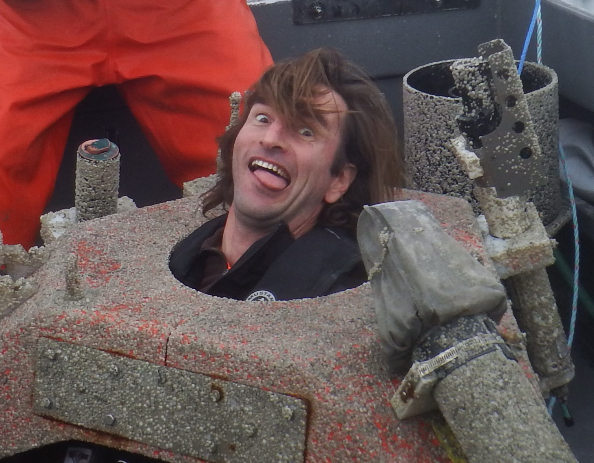
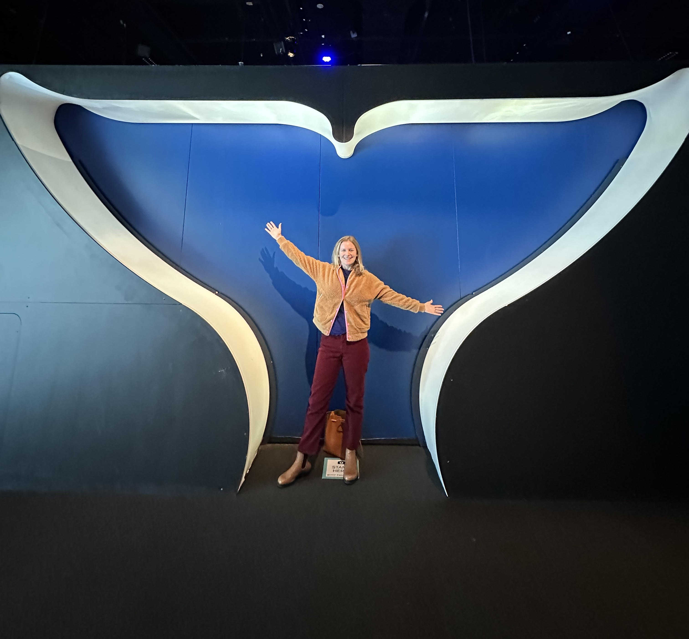

1 Introduction to Meeting Attendees
1.1 For detailed instructions, see OpenScience website
1.2
1.2.1
1.2.2 Marla Holt, NWFSC
Marla Holt is a Research Wildlife Biologist for the NWFSC Marine Mammal Ecology Team in Seattle, WA. Her current research focuses on the effects of noise on sound use and behavior of endangered killer whales. When not working, she enjoys skiing, dancing and attending various events with her sports enthusiastic family.

1.2.3 Manolo Castellote, AFSC & CICOES
Manolo is a U. of Washington employee working for MML/AFSC through the cooperative institute CICOES. He started at MML as a postdoc in 2010 to apply acoustics to Cook Inlet Beluga (CIB) to expand knowledge on seasonal distribution and effects of noise, but soon got involved in other PAM projects for MML, often in collaboration with Catherine Berchok’s group. He continues do do beluga PAM in Cook Inlet and other regions of AK, but is also involved in work on other species in topics including hearing, behavioral response, noise mitigation, noise regulation, and soundscape characterization.
1.2.4 
1.2.5 Cory Hom-Weaver, SWFSC
Cory started working as an acoustic ecologist at SWFSC in 2020. During her time at the center, her research has focused the detection and classification of baleen whales in the California Current Ecosystem. She is also interested in technological development of passive acoustic monitoring systems. In her free time she loves to surf, cook and hike.
1.2.6
1.2.7 Becca Van Hoeck, NEFSC
Becca coordinates the Inflation Reduction Act funding the NEFSC Passive Acoustic Branch received for the PAM Strategic Initiative and North Atlantic right whale monitoring. She also conducts research and participates in regional coordination related to offshore wind energy development focused on fish and soundscapes. Outside of work, she spends her time reading fiction, spending time outside, and wrangling her two year old son.
1.2.8
1.2.9 Megan McKenna, CIRES-NCEI
Megan works with collaborative teams collecting PAM data, currently with the SoundCoop and previously with SanctSound. Megan helps to unravel these complex data by applying analytical tools- both new and existing- into standardized data processing pathways. While interested in metrics that look at the whole soundscape, vessel noise is often a focus. Megan also teaches graduate classes on marine science and policy at Middlebury Institute of International Studies in Monterey. When not working, Megan is out exploring the beautiful central coast of California with her family.
1.2.10 
1.2.11 Shannon Rankin, SWFSC
Shannon leads the Southwest Acoustic Ecology Lab at SWFSC in La Jolla. She has worked with a variety of marine mammals (from vaquita to blue whales, and most everything in between) using mobile PAM platforms: towed arrays, sonobuoys, drifting buoys, and this year she’ll begin to work with gliders.
1.2.12
1.2.13 Annamaria DeAngelis, NEFSC
Annamaria works in the NEFSC’s Passive Acoustics Branch as the odontocete team lead and IT liaison. She has a passion for beaked whales, and loves to go out in the field to catch a glimpse (acoustically or visually) of them. Unsurprisingly, a very influential paper to her career was Peter Tyack’s Extreme diving of beaked whales, as it provided one of the first looks into this elusive genus of whales. She has two young children that keep her busy outside of work.

1.2.14 Samara Haver, CIMERS
Samara is a research associate in the Oregon State University/NOAA PMEL Cooperative Institute for Marine Ecosystems and Resources Studies. Samara’s research primarily focuses on marine soundscapes and ocean noise, and she collaborates closely with NOAA NMFS, ONMS, and the National Park Service to monitor and understand underwater sound in U.S. waters.
1.2.15
1.2.16 Kourtney Burger, SWFSC
Kourtney started working with the Southwest Acoustic Ecology lab as a lab technician in 2022. She assists the team with data management and archive, data analysis, an general lab management and maintenance. Outside of work, she enjoys reading, spending time outside, and hanging out with her dog and family.